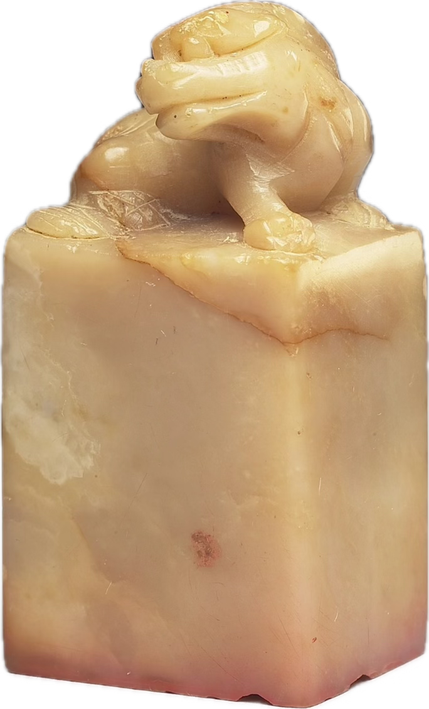

● Motion · Real Stone Chop → 命 Print
加盖印章 · 实体石章版（命）
用你抠好的真石章(此处 IMG_5388 兽钮)做下落的实体印,真·命朱印(你那枚白文)做盖完显现的印记。2D 照片不做形变(不 squash),冲击靠接触投影收紧 + 触觉 + 纸面微震;石章略调暖落进宣纸。这是命/相/卜 各配一方的通用模板——换石章图 + 换印记图即可。
命书 · 第一章
庚子 · 丙戌 · 命格
BaZi natal reading


● 触觉 medium
时间轴（base ≈ 1.5s · 取中）
| 阶段 | 时间 | 变换 | 触觉 |
|---|---|---|---|
| 文本入场 | 0–430ms | stagger，ty 7→0 | — |
| 石章下压 | 0–540ms | 真实照片 ty −320→0（不形变）；投影收紧 | — |
| 触底轻压 | 540–645ms | 仅 ty +4 / scale .992；纸面微震；红印未现 | ● medium impact |
| 抬起 | 750–1350ms | ty 0→−330，末段 fade | — |
| 显·命印 | 780–1110ms | 真朱印淡入 + 墨晕（随石章抬离） | — |
各配一方:把
移植 RN: 石章
.chop 的 img 换成 相/卜 对应石章，.print 换成 seals/xiang.png / bu.png 即可，时序不变。移植 RN: 石章
Image 用 withSequence 下压/抬起；触底 Haptics.impactAsync(Medium)；朱印 withDelay 抬起阶段淡入。